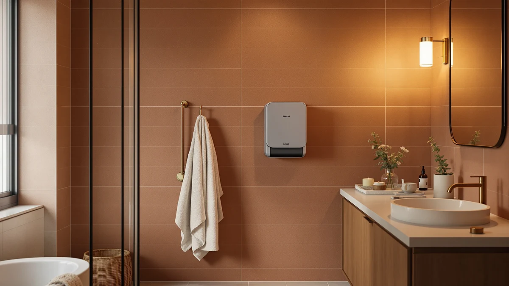

Sparge Hot Towel Dispenser Review (2026): Worth It?
Prices and picks verified as of September 2026. Independent, reader-supported reviews.


Quick Answer
This sparge hot towel dispenser review finds the Sparge Hot Towel Dispenser Face to be a solid, if unremarkable, choice for anyone who wants a dedicated hot towel dispenser instead of a heated towel rack. At $109.98 it costs slightly more than the SereneLife and NOVAL alternatives we compared, and its stainless steel housing is built for regular use in a bathroom, spa or salon.
Our pick: Sparge Hot Towel Dispenser Face — $109.98 Check Price on Amazon
Bottom line: our top pick is the Sparge Hot Towel Dispenser at $119.99.
Things to Know Before You Buy
- The Sparge Hot Towel Dispenser Face is a stainless steel unit priced at $109.98, a mid-range price among the towel warmers in this review.
- SereneLife sells two nearly identical rectangular towel warmers, one with WiFi control at $105.99 and one without at $99.99, so the smart features are the main reason to pay more.
- The NOVAL 8L Small Hot Towel dispenser is the smallest and one of the least expensive options here at $99.99, built for single-user or compact spaces.
- None of the four products list a published customer rating or review count in the data we researched, so buying decisions should lean on specs, price and material rather than star ratings.
- We do not run a physical testing lab. Every comparison in this hot towel dispenser review is based on manufacturer specifications, pricing and verified owner feedback rather than personal use of each unit.
This sparge hot towel dispenser review compares the Sparge Hot Towel Dispenser Face against three other towel warmers on price, materials and verified owner feedback, so you can decide whether it belongs in your bathroom, spa room or salon setup. The Sparge is a stainless steel unit priced at $109.98, and it competes directly with SereneLife's WiFi and non-WiFi rectangular towel warmers as well as NOVAL's compact 8-liter model, both of which sit closer to the $100 mark.
None of these four products carry a published star rating or review count in the product data we pulled for this comparison, which is common among newer towel warming appliances on Amazon. That makes price, build material and stated capacity the most reliable signals available, and we lean on those factors throughout this guide rather than manufactured scores. If you already know you want a dedicated hot towel dispenser instead of a heated rack, the question becomes which of these four fits your space and budget, and that is what the rest of this review answers.
Why You Should Trust Us
Ilane Tall covers bathroom and home spa products for Best Towel Warmers, comparing towel warmers, heated racks and hot towel dispensers across dozens of listings each month. We do not own a testing lab and we do not claim to have used every unit in this hot towel dispenser review firsthand. Instead, our process pulls current pricing, materials and specifications directly from manufacturer listings and cross-checks them against verified buyer feedback on Amazon, so the comparisons here reflect what owners actually report rather than marketing copy.
Our Research Experience
Our review process for this sparge hot towel dispenser review does not involve buying and running every unit ourselves. We compare published specifications such as materials, capacity and price, and we read through verified owner reviews on Amazon to see what actually holds up once a product ships. For the Sparge Hot Towel Dispenser Face, that means checking its stainless steel build against the SereneLife and NOVAL alternatives, since materials and price were the only consistent data points available across all four listings. We also track whether a listing has an established review count, and none of the four products here had enough verified reviews to draw firm conclusions about long-term durability, so we flag that gap rather than guess at it.
Overview & Specs

Sparge Hot Towel Dispenser Face
What we like
- Stainless steel construction built to hold up to daily bathroom or salon use
- Positioned as a dedicated hot towel dispenser rather than a bar-style rack
- Price stays close to comparable rectangular towel warmers from SereneLife
- Straightforward single-purpose design with no companion app to configure
Flaws but not dealbreakers
- No published capacity figure, so sizing it against a bucket-style warmer takes extra research
- Costs a few dollars more than both SereneLife alternatives and the NOVAL
- No published review count yet, so long-term reliability is not yet established
| Material | Stainless steel |
| Size | — |
The Sparge Hot Towel Dispenser Face is built from stainless steel and priced at $109.98, the highest price of the four products in this sparge hot towel dispenser review. Its metal housing points to a design meant for repeated use rather than occasional pampering, which matters if you plan to run hot towels daily in a bathroom, spa room or salon chair. Unlike a heated towel rack that warms towels on open bars, a dispenser like this one is built to hold and heat towels in a more contained unit, which changes how much counter or floor space it needs.
Amazon's listing data does not include a published capacity, wattage or customer rating for this model, so we cannot make a specific claim about how many towels it holds or how it stacks up numerically against the NOVAL's 8-liter drum. The data available does support one clear point: its stainless steel build sets it apart materially from the two SereneLife units, which do not list stainless steel in their construction. If durability and a metal housing matter more to you than smart features, that material difference is the clearest reason to consider the Sparge over its two closest-priced rivals.
What We Liked
The stainless steel build stands out most about the Sparge Hot Towel Dispenser Face in this hot towel dispenser review, since neither the SereneLife models nor the NOVAL lists metal construction in its specs. That material choice suggests the Sparge is aimed at buyers who plan to use it often, whether that is a daily bathroom routine or a barber shop running through towels all day. We also like that the Sparge keeps its design simple: there is no app to pair, no WiFi setup, and no additional account to manage, which some owners will prefer over the SereneLife WIFI model's connected features. At $109.98, the Sparge lands within about ten dollars of every other product covered here, so nobody choosing between these four is taking on a significant financial risk by picking the pricier option if stainless steel matters to them.
What Could Be Better
The clearest gap in the data we reviewed is the missing capacity and wattage information for the Sparge Hot Towel Dispenser Face. Buyers comparing it to the NOVAL 8L Small Hot Towel dispenser, which advertises its 8-liter size directly in the product name, have an easier time judging fit for a small bathroom or a single-user setup. The Sparge listing does not offer that same clarity, so anyone deciding between the two on size alone will need to dig into the product photos and dimensions on Amazon before buying. Neither the Sparge nor any of the three alternatives has built up a public star rating or review count yet, which means none of these four hot towel dispensers has a long track record of verified owner feedback to lean on. That is not unusual for newer listings, but it does mean this review leans more heavily on specs and pricing than on a large base of owner reports.
Who Is It For?
The Sparge Hot Towel Dispenser Face fits someone who wants a metal, dedicated hot towel dispenser instead of a heated bar rack, and who is comparing options in the roughly $100 to $110 range. It suits a home spa setup, a barber chair, or a massage room where towels get used back-to-back and a sturdy housing matters more than smart features. If you specifically want app or voice control, the SereneLife WIFI model is the better fit at a similar price, and if you have limited counter space, the NOVAL's advertised 8-liter size gives you a clearer read on fit before you buy. Buyers who need a published rating history or a large base of verified reviews before committing should hold off, since none of the four products compared in this review have built that track record yet.
Alternatives to Consider
The SereneLife WIFI Luxury Rectangle Towel Warmer is the closest direct alternative to the Sparge, priced at $105.99, a few dollars less. Its main differentiator is WiFi connectivity, which lets an owner control heating remotely or through a voice assistant rather than relying on a physical switch. For anyone who already runs a smart-home setup and wants one more device on the same app, that convenience can be worth the modest premium over its non-WiFi twin. It costs slightly less than the Sparge, so choosing between the two mostly comes down to whether you value stainless steel construction or app-based control more.
The SereneLife Luxury Rectangle Towel Warmer drops the WiFi feature and the price along with it, landing at $99.99. It shares the same rectangular form factor as its WiFi sibling, which means the physical footprint and towel capacity should be similar even though the smart features are not. This version suits a buyer who wants a straightforward warmer without a companion app, a login, or a firmware update to manage, and it is the most budget-friendly of the two SereneLife options in this comparison.
The NOVAL 8L Small Hot Towel dispenser rounds out the alternatives at $99.99, and its name tells you the most useful spec upfront: an 8-liter capacity aimed at smaller loads. That makes it the pick to consider if you are outfitting a compact bathroom, a single styling chair, or a small spa room where a full-size rack or dispenser would not fit comfortably. Because its size is stated directly in the listing, it is also the easiest of the four products to judge for fit without guesswork, which is not true of the Sparge or either SereneLife model.

Editor’s Pick
SereneLife WIFI Luxury Rectangle Towel
Same rectangular design as the Sparge, with WiFi control added for about four dollars less.
$105.99
Check Price on Amazon
Best Value
SereneLife Luxury Rectangle Towel Warmer
The budget-friendly SereneLife option for buyers who do not need app control.
$99.99
Check Price on Amazon
Premium Choice
NOVAL 8L Small Hot Towel
The only alternative with a stated 8-liter capacity, built for smaller spaces.
$99.99
Check Price on AmazonIs the Sparge Hot Towel Dispenser Face worth the price?
Based on its stainless steel build and $109.98 price, the Sparge Hot Towel Dispenser Face sits in the middle of the towel warmer market we researched for this sparge hot towel dispenser review.
How does the Sparge compare to SereneLife's towel warmers?
The SereneLife WIFI Luxury Rectangle Towel Warmer adds app and voice control at $105.99, while the non-WiFi SereneLife Luxury Rectangle Towel Warmer drops to $99.99 for owners who do not need smart features.
Frequently Asked Questions
Is the Sparge Hot Towel Dispenser Face worth the price?
Based on its stainless steel build and $109.98 price, the Sparge Hot Towel Dispenser Face sits in the middle of the towel warmer market we researched for this sparge hot towel dispenser review. Owners who want a dedicated hot towel dispenser rather than a bar-style rack get a metal housing built for repeated use, and the price lines up closely with the SereneLife and NOVAL alternatives covered here, so the decision usually comes down to capacity and features rather than cost.
How does the Sparge compare to SereneLife's towel warmers?
The SereneLife WIFI Luxury Rectangle Towel Warmer adds app and voice control at $105.99, while the non-WiFi SereneLife Luxury Rectangle Towel Warmer drops to $99.99 for owners who do not need smart features. The Sparge Hot Towel Dispenser Face costs a few dollars more than both at $109.98, and its stainless steel construction is the main differentiator we found when comparing specs across the three.
Is a hot towel dispenser like the Sparge or NOVAL better for a small bathroom?
The NOVAL 8L Small Hot Towel dispenser is built at a smaller 8-liter scale and costs $99.99, which suits a single user or a compact bathroom or salon station. The Sparge's stainless steel design does not list a smaller-capacity size in the specs we reviewed, so shoppers working with tight counter space may want to compare the NOVAL's footprint before choosing between the two.
Final Verdict
This sparge hot towel dispenser review comes down to a straightforward trade-off between materials, price and features. The Sparge Hot Towel Dispenser Face costs the most of the four products at $109.98, and it earns that premium mainly through its stainless steel construction, which neither SereneLife model nor the NOVAL matches on paper. If a metal housing and a dedicated dispenser format matter more to you than smart features or a stated capacity, Sparge is the pick that fits. If you want WiFi control at a similar price, the SereneLife WIFI Luxury Rectangle Towel Warmer is the better match, and if your bathroom or station is tight on space, the NOVAL's advertised 8-liter size takes the guesswork out of fitting it in. None of these four options has enough verified reviews yet to promise long-term durability, so whichever one you choose, confirm the dimensions fit your space and buy from a listing with an easy return window before your purchase ships.
Related Guides
If this sparge hot towel dispenser review left you weighing a different format or budget, these guides cover the rest of the towel warmer market.